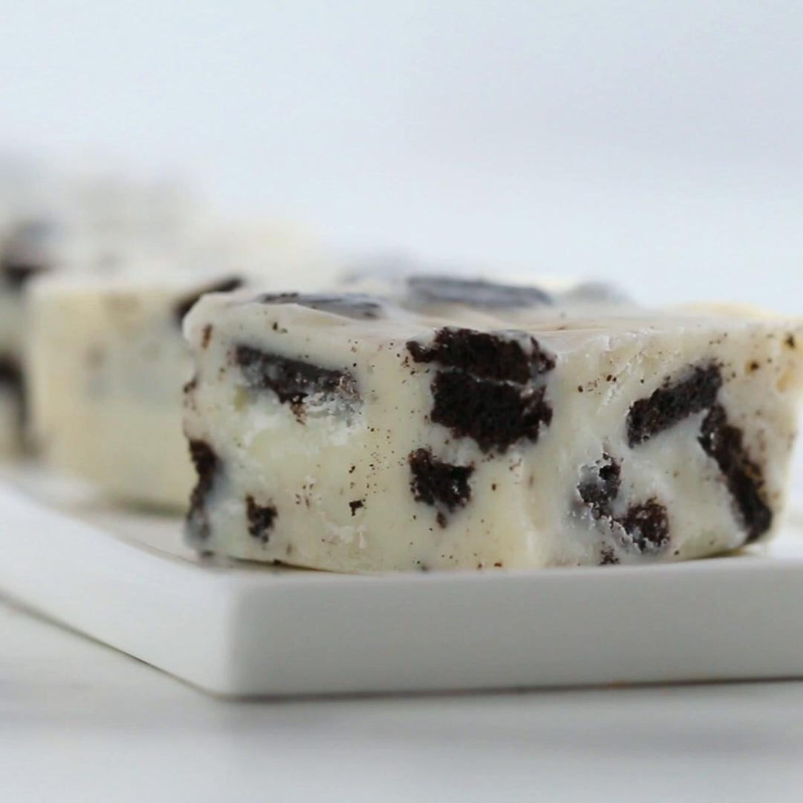

Cookies 'n' Cream 3-ingredient Fudge

A simple and tasty bite-sized treat!
This is a nice and easy recipe to make.
It is a nice change of pace from more common desserts like Oreos and chocolate fudge.
Ingredients
- White Chocolate
- Sweetened Condensed Milk
- Oreos
Steps
- Put the chocolate and sweetened condensed milk and melt it in the microwave in 15-second increments.
- When the chocolate is fully melted, add in the chopped Oreos and stir until mixed.
- Pour the mix into a parchment paper lined baking tin.
- Chill for 2 hours oro until firm.
- Cut into bite-size pieces.